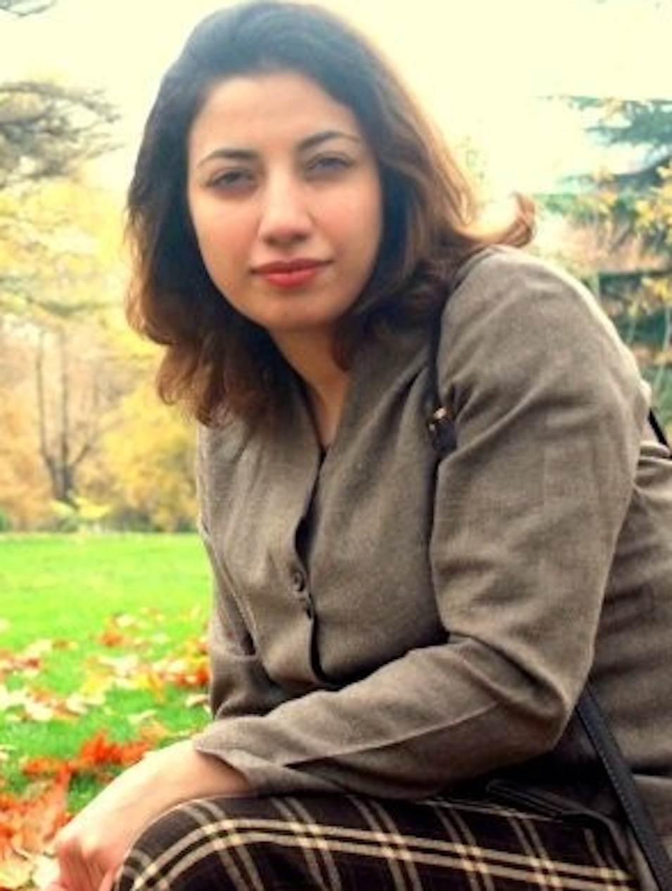
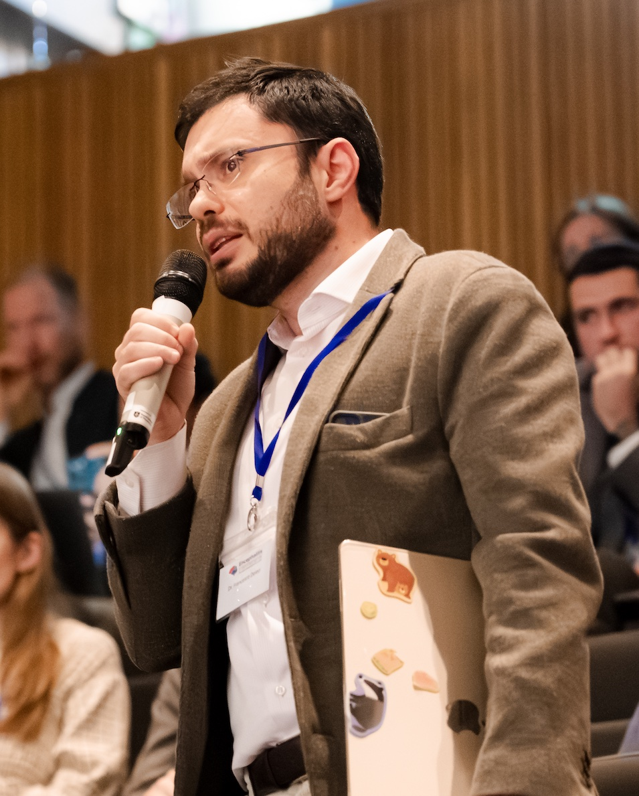
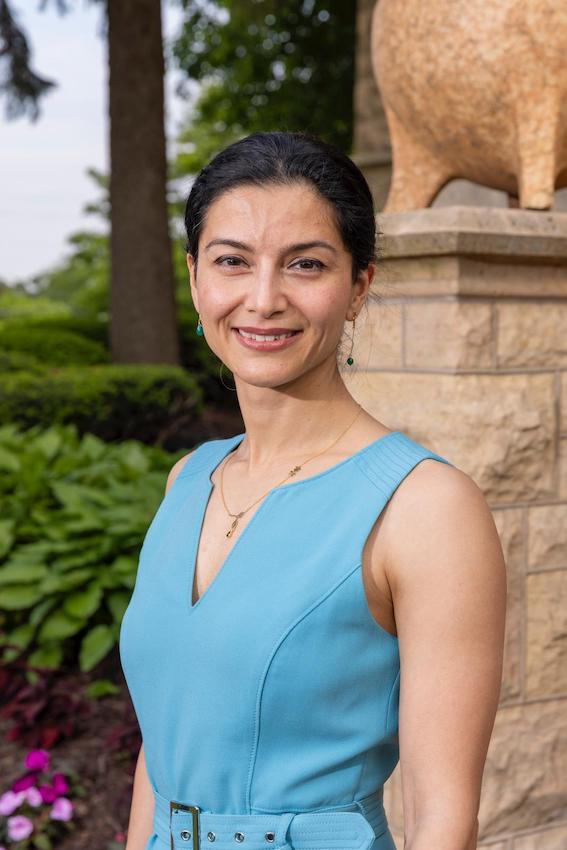
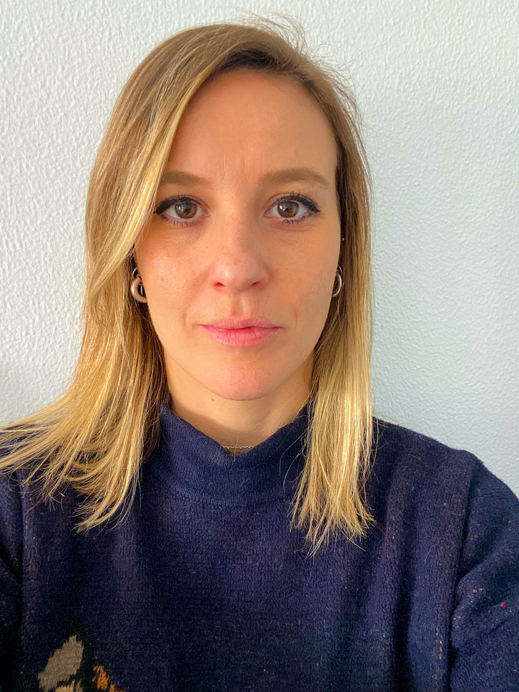
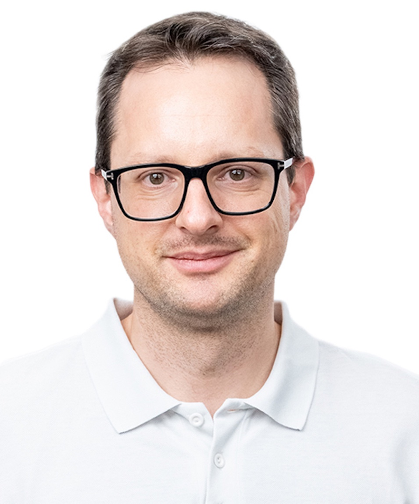
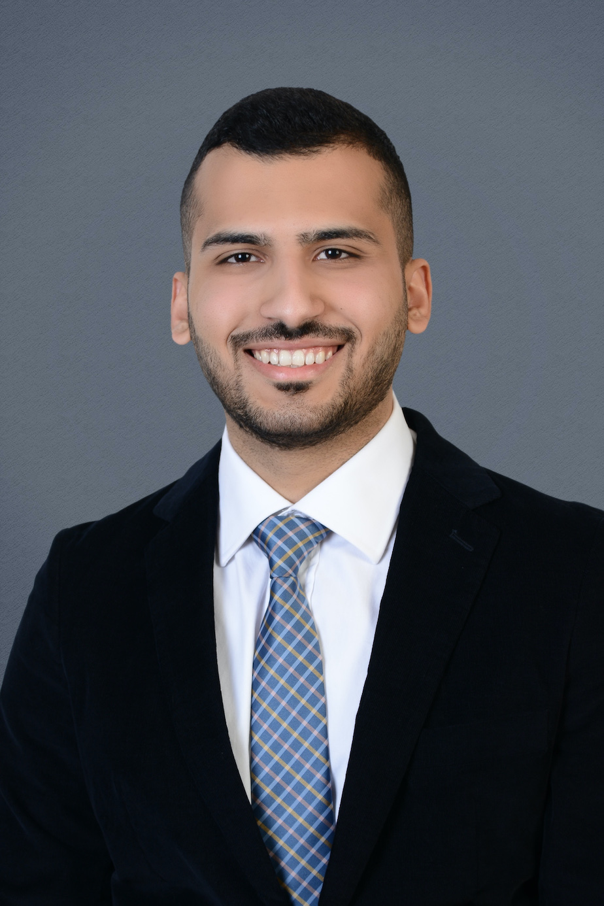
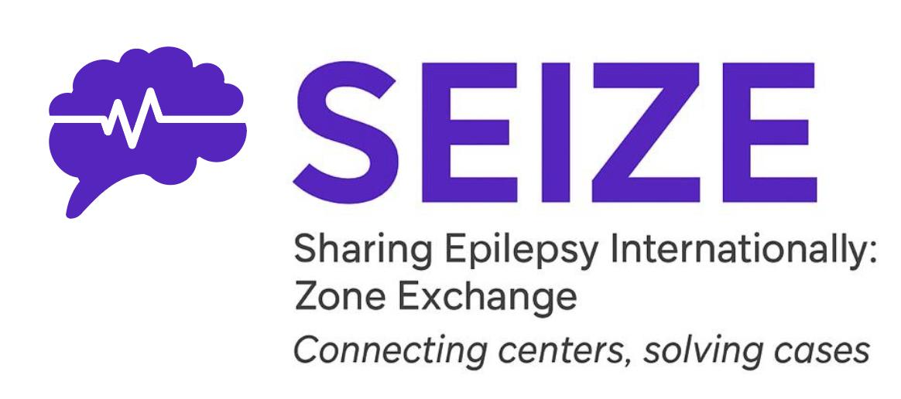

Sharing Epilepsy Internationally: Zone Exchange
Connecting centers, solving cases
SEIZE is a global initiative dedicated to connecting epilepsy centers, fostering collaboration, and promoting knowledge exchange. Our mission is to advance education, support the growth of epilepsy professionals, and provide a platform for discussing challenging and rare cases worldwide.

Founder
Montreal Neurological Institute and Hospital, Canada
Epilepsy neuroscientist

Co-Founder
IRCCS Foundation Neurological Institute “C. Besta”, Italy
Neurologist & Epileptologist

Co-Founder
University of Texas Health Science Center, USA
Neurologist & Epileptologist

Co-Founder
IRCCS Foundation Neurological Institute “C. Besta”, Italy
Neurologist & Epileptologist

Co-Founder
Basel University Hospital, Switzerland
Neurosurgeon & Epilepsy surgeon

Digital communications manager
Jordan health ministry, Jordan
Medical intern
Neurologist and Epileptologist
Amrita Hospital, Faridabad, Haryana, India
Neurologist and Epileptologist
Clare Regional Hospital, Halifax, Canada
Neurologist and Neuroimmunologist
John Radcliffe Hospital, Oxford, UK
Neurologist and Epileptologist
University of Brescia, Brescia, Italy
Neurosurgeon, Clinical Lead in Epilepsy Surgery & Functional Neurosurgery
Chennai, India
Epileptologist, Associate Clinical Chief
Cliniques Universitaires Saint-Luc, Belgium
Associate Professor, Neurologist and Epileptologist, Program Director (Epilepsy Fellowship)
University Hospitals Cleveland, USA
Pediatric Neurologist and Epileptologist
Greater Paris University Hospital, France
Neurologist and Epileptologist
Hospital Internacional de Colombia, Bucaramanga, Colombia
Neurologist and Epileptologist
Mount Sinai Hospital, New York, USA
Neurologist and Epileptologist
Pars Hospital, Tehran, Iran
Neurologist, Head of Epilepsy Program
Aster Whitefield Hospital, Bangalore, India
Neurologist and Epileptologist, President (ASLEK Epilepsy Association)
Democratic Republic of Congo
Neurologist and Epileptologist
Wockhardt Hospitals, Mumbai, India
Professor of Neurology, Epileptologist, Head of Regional ILAE Section
Isfahan University of Medical Sciences, Iran
Neurosurgeon and Epilepsy Surgeon
Beijing Tiantan Hospital, Capital Medical University, China
Clinical Assistant Professor, Neurosurgeon and Epilepsy Surgeon
University of Montreal Hospital Center, Canada
Neurologist
Tribhuvan University Teaching Hospital, Kathmandu, Nepal
Assistant Professor, Chief of Epilepsy Center, Neurologist and Epileptologist
University of Oklahoma Health Sciences Center, USA
Neurologist and Epileptologist, ILAE YES Representative
Mansoura University, Egypt
Assistant Professor, Neurologist and Epileptologist
University of Alabama at Birmingham, USA
Associate Professor, Neurologist and Epileptologist
Queen’s University, Canada
Pediatric Neurologist and Epileptologist, Assistant Clinical Professor
CHU Sainte-Justine, Université de Montréal, Canada
Epilepsy Fellow
University of Indonesia, Indonesia
Pediatric Neurologist and Epileptologist
Georgia
Epileptologist
Tehran University of Medical Sciences, Iran
Neurologist and Epileptologist
Iran University of Medical Sciences, Iran
Consultant Neurologist and Epileptologist
Epilepsy Network Australia, Melbourne, Australia
Pediatric Neurosurgeon
Scientific-Clinical Center for Maternal and Child Health, Ashgabat, Turkmenistan
Assistant Professor in Neurology, Epileptologist
Beth Israel Deaconess Medical Center, Harvard Medical School, USA
Associate Professor of Neurosciences, Neurologist and Epileptologist
UC San Diego, USA
Epileptologist
UCL / Queen Square Institute of Neurology, UK
Neurosurgeon and Epilepsy Surgeon
Bogotá, Colombia
Neurologist and Epileptologist
UTHealth Houston, USA
Neurosurgeon, Functional Neurosurgery
RSPON, Jakarta, Indonesia
A SEIZE Spotlight Seminar focusing on cardiac risk, SUDEP, and mortality in epilepsy, bringing together experts to discuss risk factors, prevention, and clinical considerations.
Date: October 23, 2026 | Time: 10:30 AM–12:00 PM (Montreal, Canada Time) | Location: Online
Our recent SEIZE Spotlight Seminar on Polymicrogyria and Epilepsy Surgery: From Evaluation to Treatment was successfully delivered, bringing together international experts for discussion of presurgical evaluation, surgical decision-making, and advances in epilepsy surgery. We sincerely thank all speakers, moderators, and attendees for their valuable contributions.
We are pleased to welcome Dr. Alessandra Burini as SEIZE’s Clinical Case Discussion Coordinator, supporting the development and coordination of clinical case discussions within the SEIZE community.
We are pleased to welcome Daniel Mandelson, MD-PhD student as SEIZE’s Grant & Funding Coordinator, supporting grant development, funding opportunities, and resource mobilization for SEIZE initiatives.
We are honored to welcome Dr. Neda Bernasconi and Dr. Andrea Bernasconi to the SEIZE Advisory Board, contributing their expertise and guidance to the continued development of the initiative.
Our inaugural SEIZE Spotlight Seminar on LGI1 Encephalitis and Epilepsy was successfully delivered with strong international participation. We sincerely thank all speakers, moderators, and attendees for their valuable contributions, reflecting the collaborative spirit of the SEIZE community.
We are pleased to welcome Dr. Haitham Hazaimeh as SEIZE’s Communications and Outreach Manager, supporting global engagement and outreach across the epilepsy community.
SEIZE has officially launched its international research program focused on clinical epilepsy research, public health research, and collaborative global neurology initiatives. We are actively seeking motivated medical students, residents, fellows, and graduate students interested in participating in international collaborative projects. Individuals interested in joining our research activities are encouraged to contact us: fatemeh.fadaie@mcgill.ca
If you would like to submit a challenging epilepsy case for discussion, click the button below. We will review the request and follow up with you.
Submit CaseGeneral contact: initiative.seize@gmail.com
Lead contact: fatemeh.fadaie@mcgill.ca
